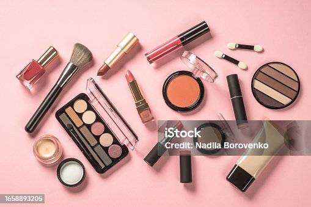

Recomendación de maquillaje
Publicado el por Giuli

Encontrar el maquillaje ideal puede transformar tu rutina de belleza.
Desde productos básicos para un look natural hasta aquellos que aportan un acabado más sofisticado, elegir las opciones adecuadas marca la diferencia. En este artículo te comparto mis recomendaciones, con productos que destacan por su calidad, acabado y versatilidad, para que encuentres tus favoritos y resaltes tu belleza en cada ocasión.
Básicos que no pueden faltar
Estos tres productos sirven tanto para el día a día como para una ocasión especial:
- Base o tinte ligero que unifique el tono de la piel.
- Máscara de pestañas para dar profundidad a la mirada.
- Labial o bálsamo con color en un tono nude o rosado.
El mejor maquillaje es el que te hace sentir tú misma.
- Giuli, autora del blog
Más información en Sephora